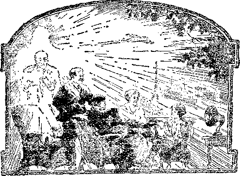

BS!
--------- - '.:w—- :
Labor and Economics
Oct of Work and the "Dole” . . ............ 555
1'he High Cost of Living ................ 560
Social and Educational
On American Shores .................. 553
A British Editor’s View of the Golden Ace ......... 556
The Channel Islands .557
Twenty Years a Newspaper Man . . . . . . . . . . . , . 558
Behind My Garden Wall ................ 561
The Work of God’s Hands ................ 563
Standardizing the Schools ............... 564
Photograph of a Very Old Man .............. 566
Eadio Programs ................. . . . . 574
Political—Domestic and Foreign'
The Day of Fire ................... 547
The Speaker of the Evening (Cartoon) . . . 550
From Our Glasgow Correspondent ............. 558
Zeal fob the I.aw in South Africa . . . , ... . . . . . 569
Agriculture and Husbandry
Some More New Fruits ........... 553
Five Square Miles of Cantaloupes ............ 554
The New Vegetable Topepo ............... 554
Airplane Dusting of Cotton Fields ............ 554
Grasshoppers in February ................ 569
Science and Invention
Something About Oub Sun ............... ,552
Home and Health
Plain Food Versus Feasting ............... 566
More About Dandelions the Year Abound .......... 566
Religion and Ptitt.osorhy
The Time of the End ................... 565
The End of the World .................. 567
Some Observations on Parasites ............. 568
Comfort fob the Jews ................. 570
Studies From "The Harp of God” ............. 575
J’ablished every other Wednesday at 18 Coneord Street, Brooklyn, N. 16, U. S. A., by WOODWORTH, HUDGINGS & MARTIN
Copartners and Proprietors Address: 18 Concord Street, Brooklyn, U.S.A.
CLAYTON J. WOODWORTH . . . Editor ROBERT J. MARTIN . Business Manager WM. U. HUDGINGS . . Sec’y and Treas.
Five Cents a Copy—$1.00 a Year Make Remittances to THE GOLDEN AGE
Foreign Offices: British.....34 Craven Terrace, Lancaster Gate, London W. 2
Canadian......... 38-40 Irwin Avenue, Toronto, Ontario
Australasian ....... 495 Collins Street, Melbourne, Australia South African ...... 6 Lelie Street, Cape Town, South Africa
Entered as second-class matter at Brooklyn, N. Y., under the Act of March 3, 18J9
Volume VII Brooklyn, N. Y., Wednesday, June 2, 1926 Number 171
RUSSIA, Turkey, Greece, Spain, Italy and England—one after another they have all capitulated before the onward urge of the facismo spirit of the dictator! In alleged apprehension of the red propaganda calculated to seduce the arrny and navy, the British “conservative” elements have been quietly consolidating an organization really intended to break the stranglehold of union labor on insular industries. '
Last month the psychological time seemed to the British conservatives to have arrived for them to show their hand. Confronted with general paralysis of industry the government invoked the Emergency Powers Act, passed as a war measure in 1914, whereby Premier Baldwin automatically assumed dictatorial powers, with full authority to requisition and operate the mines, transportation and other branches of industry by the government, using the army, marine and air forces to quash all opposition on the part of the strikers who refused to work increased hours for decreased pay. The government even announced that it would commandeer all radio broadcasting stations, presumably for conservative propaganda and to keep the unionists “off the air”. Now they may say that they won—but the final conflict is merely posponed.
Following the brief ascendency of labor during the war, the conservative element has regained its prestige and materially strengthened its hand. Furthermore union labor, it must be admitted, sometimes acts in complete though unavowed accord with its nominal adversary, to defraud the public; while communism, having gravitated into a phase of capitalism, though not stifled has nevertheless been curbed; and the ever present threat of red activities has provoked a white reaction, the most spectacular form of which is known as fascismo—dictatorship, autocracy in the fullest sense.
. Fascismo, originated in Italy soon after the
By 0. L. Bosenkrans, Jr.
war, has achieved supremacy with startling ease and rapidity, first in its home land, and then has spread out like a white plague through Europe ■—into Spain, Greece, France, Germany, Austria, Poland, Denmark, the Balkans and Great Britain. Even in India the British “conservatives” are organizing fascist clubs in protest against the Swaraj movement of the native workers.
UNDAMENTALLY fascism represents a movement to supersede constitutional govits civilizing program of modernizing'institutions, is under the thumb of a fascist dictator, Kemal Pasha. In Greece, General Pangalos the dictator is an exact replica of General De Bivera, the dictator of Spain; and both are imitators of the Italian dictator Mussolini.
ernment by dictatorship in the hands of ona. on whom the conservative moneyed powers can implicitly rely, who is expected to arbitrarily override popular liberties wherever they interfere with the attainment of the “interests’ ” goal. Virtually it amounts to an adaptation of the Bolshevist, idea to subserve the aims of the master-class instead of the proletariat.
Mussolini, the founder of fascism, is himself a renegade Socialist. The movement, which is curiously reminiscent of Hellenic “tyrannico” and the Caasarian imperatorship, at first seemed to be out of sympathy with the Vatican; but latterly, it is observed, has won the warm approval of the Catholic hierarchy.
Our American press has systematically sought to convey the impression that fascism is endemic to the Latin peoples, that it represents their innate propensity to establish a clique in power rather than to perpetuate representative government. That, however, is but a superficial view of it, and contradictory to its ominous aspect as a world-phenomenon. The fact that fascismo has the backing of capitalism has been studiously kept in the background in every land.
The fascismo spirit of reactionary despotism is manifesting itself in countries which ostensibly condemn it. In Russia the Soviet system has been changed and crystallized into a veritable fascist bureaucracy. Turkey, in spite of 647 "
THE late Pastor Russell discerned a regular -*• sequence of human events portrayed in Biblical prophecy and Apocaliptic symbolism, as introductory to the establishment of Messiah’s kingdom. These signs of the times as he saw them outlined were:
(1) The international armament race of the past twenty-five- years.
(2) The outbreak of the World War as a natural sequence.
(3) A subversion of sectarian disagreements by the Protestant bodies and a rapproachment with the Papal See.
(4) An overwhelming triumph of capitalism ever the radical elements, accompanied by an abrogation of popular liberties, which capitalistic reaction in concert with confederated ecclesiasticism would inaugurate a drastic persecution of nonconformists to their regime, ostensibly on “patriotic” grounds; but the triumph of “Babylon” would be evanescent, owing to the widespread diffusion of education among the masses and of liberty-loving ideals; then despotism (fascism) being rife would become unendurable.
(5) World-wide revolution would ensue on a hitherto unprecedented scale, and the setting up of “beastly” revolutionary governments, under which civilization would gradually go to wreck.
(6) A steady growth of the Zionist movement, and the rehabilitation of 4he Holy Land.
(7) Finally becoming incensed at Jewish nonconformity with their program of communism and atheism, and envious of their material prosperity, the “beastly” red governments would band together and launch a crusade against Palestine, the “land of unwalled villages”.
(8) Though meeting with initial successes, these revolutionaty governments would collapse more suddenly than they arose, before a special and direct manifestation of divine anger and judgment.
(9) Armageddon, universal anarchy, would Eupervene.
(10) Then, by divine intervention, order would be restored out of chaos, and a new government would arise, based upon righteousness and truth, the kingdom of Messiah. .
I personally see no valid reason for particularly amending this schedule. The signs are being conspicuously fulfilled in current history. The World War, when “the hills did tremble and their carcasses 'were torn [by shells] in the midst of the streets”, is in retrospect. The Protestant churches are striving to confederate themselves, though the Methodists still hold aloof. Anglicanism poses as the source of authority for Protestantism at large. However, this “rolling together” is yet in a tentative stage. Capitalism has regained its prestige over the radical elements since the Avar. Zionism is meeting with predicted success. In fact, all the aforementioned “signs” are manifesting themselves in true prophetic order, leading up to the final Armageddon conflict.
WE IN the United States are accustomed to felicitate ourselves on our democratic institutions, yet we nevertheless are being reminded frequently of late by certain sections of the press that our constitutional rights are being progressively infringed on in these post-bellum days, and that federal and state governments show an increasing tendency toward paternalist encroachments and a centralizing policy prejudicial to local autonomy and bordering on fascism. Blue laws are passed on the sly, making it illegal for the quiet citizen to hoe his garden on Sunday, though it is all right for the hilarious bounder to “'tank up on moon” and run over people with his car. Prohibition is cited as an example of sumptuary legislation which infringes on the rights of individuals. The statute books are being crowded with a mass of new and superflous laws, while even the old ones suffer for lack of enforcement.
Now steps forward Senator Capper of Kansas, erstwhile staunch opponent of conscription, with his Universal Draft Bill, which has the enthusiastic endorsement of the American Legion because the ex-service men imagine that it will hit the war-profiteers,-against whom they nourish a grudge. This bill, according to its pompous announcer, is designed primarily “to promote peace . . . and next, to see to it that there shall be in the event of another emergency no slackers and no profiteers”. The intent of the Capper Bill is to conscript both men and money. It contemplates government control of both public and private resources for use in the national defence. By it, the president is empowered, whenever he shall consider an emergency to have arisen, to supersede constitutional government by a military dictatorship, to put the whole community under martial law.
The excuse made for such a revolutionary abrogation of our constitutional guarantees is that if capital became alarmed over the prospect of its own conscription the contingency of war would become remote. To us this reasoning has the appearance of shallow subterfuge, transparently camouflaging a more sinister purpose; for if the moneyed interests exercise such a potent influence over the federal government that they can instigate a declaration of war, is it not absurd to draw the inference that their influence is inadequate t.o prevent a conscription of capital. ?
Conversely, if the popular suspicion be a just one, that polities is the tool of finance and legislation directed by lobbying, is it unreasonable to surmise that Congress is unlikely to offend the big intei-ests? If the Capper Bill is enacted does it not seem probable that capital will supervise the final drafting of it in such a way that, there will be no serious interference with profits? Nay, we can conceive of a financial ‘■'emergency” carefully planned by Wall Street, and a public educated by systematic propaganda to accept it as such. Would the public then be treated to the edifying spectacle of witnessing steel drafting oil and oil drafting the automobile interests, or would all three combine to draft the sawings of the common people? ■
Hw Fascism Works
SSUMINCr that this proposed nominal mili-' tary dictatorship be sponsored by big interests, it is patent what stupendous powers would become vested in the bureaucracy, whose membership must consist chiefly of their own appointees. And neither war nor the threat of it need be requisite to bring about this virtually fascist revolution in America. A railroad strike or other “emergency” might precipitate it. Once established, it might become self-perpetuating.
.Can we American citizens, with our traditions of personal liberty and our heritage of fre® speech, free. assembly, freedom of conscience, the habeas corpus and trial by jury, view without consternation the prospect of forfeiting.our inalienable rights to choice of residence and occupation; and of finding ourselves suddenly placed under military discipline in a time of profound peace, with the minions of organized graft arbitrarily assigning to each man and woman a job, however - uncongenial and unsuitable, and forced to accept whatever meager wage is determined by the bureaucracy as sufficient to maintain us at a level of “efficiency”, driven by “bucko” foremen and punished for “slacking” if we cannot- keep up the gruelling pace?
Shall the common American citizen find himself and his moderate savings confiscated under the plea of war necessity when there is no war, while the same old profiteers, masquerading as government officials, are reaping enormous profits? Yea, and shall the commonalty find itself herded to chapel to listen with mutinous ears to unctuous sermonizings on patriotism and the unpardonable sin of “slacking”? Patriotism might be made a fetish; and ths flag, the symbol of our liberties, may thus be degraded into a symbol of our enslavement to incarnate greed. As usual, the riff-raff could be hounded on to manhandle anyone displaying lukewarm enthusiasm, and conscientious objectors would be rated as slackers and “courtmartialed” at will.
Does it seem incredible that the freest people upon this planet should lose their heritage of liberty overnight? Are we forgetful of the incalculable power of propaganda when skilfully directed by experts? .Every agency would be brought into requisition—-press, pulpit, lecture platform, schools, billboards, books, pamphlets, magazines, leaflets, megaphones, electric-signs, moving pictures, and the radio. Mob psychology would be invoked; the power of suggestion relied on. Against this prodigious array, what chance would a few feeble protests have of being heard? Almost everybody would become an ardent “patriot”, for the time being, and kiss their chains.
Now I discern no good reason for doubting Pastor Bussell’s conception of the time of trouble, as manifesting itself in throes of world war, world revolution, and world-wide anarchy, with, intermittent “easements” or lulls of traa«
TH® SPEAKER OF THE EVENING
^TO-DAY, GENTLEMEN, OUR COUNTRY 'FACES ITS GREATEST ERA OF PROSPERITY—THE DAWN OF A NEW, 100% AMERICAN'CIVILIZATION/*.
Copyright, Life Publishing Company
quillity. At present we are enjoying such an interlude of comparative “peace and safety", while Babylon is laying Machiavellian plans to consolidate its power by stealing the Socialists’ “thunder’. The public is being soothed and tickled while they are braiding the knout. The public may be taken off its guard and crushed into servitude to international finance; but the triumph will be brief, for the reason that the current generation has been imbibing a doctrine of skepticism and self-worship which intrinsically unfits it to continue long as the docile subjects of despotic mammon.
The ascendency of fascisino will probably effect an adjustment of grievances among the capitalistic governments, especially with respect to war debts. Meanwhile the screaming of the war-eagles serves to distract public attention from the more important business of solidifying the dictatorships.
THE epoch of revolutions may witness the overthrow of white dominance on the planet, together with nationalist governments in the Orient. The colors have a score to settle with the sons of Japheth, and we may look for reprisals. Already the Chinese are becoming expert in handling modern military equipment; soon they may turn to manufacturing their own. The Chinese are an ingenious and adaptive race.
There may be no conspicuous resort to chemical warfare until the crusade against the Zion slate terminates in catastrophe and a universal homicidal mania obsesses mankind. The world will be reckless of consequences then, eager only to kill and burn. .A masculinized womanhood will be as savage as the men. Then may be realized the horrors previsioned in No. 172 of The Coldest Age, under the caption, “'Prohibition of Poison Gas War.” Then smiling madmen from hidden power stations may by radio direct the course of unmanned airplanes and aerial torpedoes which dart hither and thither broadcasting destruction, and pandemonium will break loose. .
The compact, thickly-populated, highly-industrialized centers of civilization will be drenched with gases, bathed with liquid-fire and sown with bacteria. Unquenchable conflagrations will overspread the sky with a blanket of smoke, almost impenetrable to light, hiding the orbs of day and night and the constellations, reacting on the human mind to plunge it into hopelessness and gloom. Perhaps some previous preparation will have been made of elaborate subterranean tunnels and chambers in anticipation of this awful time. Then fugitives will climb the “ragged rocks” of the mountain peaks to “seek sweet safety out”.
The World War disclosed what prodigious havoc can be wrought by modern explosives, even to the soil itself. But imagine all Christendom become a “No Man’s Land”, subjected to manifold greater harassment, by more terrible war engines ’ Is it altogether unworthy of belief that a universal chemical war might pollute the soil and kill all vegetation, poison the streams and fountains, effect chemical changes in the sea-rvater until “every living soul” died therein; yea, “consume the birds of the heavens” and cause the very elements to “melt”; i. e., vary their proportions in the atmospheric admixture of gases ?
The Day of Fire may be intended with a literal as well as symbolical significance, reducing great areas of the earth’s surface to the condition described in Jeremiah 4: 23-27. Of course the planet itself would remain intact, though the crust might be subjected to unprecedented seismic convulsions. After all, does not'the literalness of the Deluge of Waters seem to afford a precedent for expecting a literal Day of Fire?
OU lack of space I must endeavor to crowd into a few short paragraphs an argument which deserves at least as many pages. This argument'is based on the theories of Prof. Isaac N. Vail, originator of the “Annular Evolution” hypothesis. I refer the interested reader to his works, contenting myself with summarizing in the boldest sense his conjectures concerning the scheme of nature-economy which obtained during the antediluvian world, which he identified with the Pliocene age, during which time he surmised that all conditions of li fe were regulated by activities of certain solar rays so> at variance with those familiar to our scientists as to be virtually outside the sphere of our comprehension.
His view was that the solar ray then transmitted through a canopy of aqueous vapors, was greatly modified in its activities, being partly divested of its actinic properties.. Since the solar orb is the fountain head of both life and death on the planet all life becomes immediately responsive to the slightest variation in its activities. Prior to the flood, for a long- period the actinic power of the solar beam had been unable to function in full, consequently plant growth was prolonged, with slowness of maturity, and decay reduced to a minimum. Correspondingly animal life was torpid. There were no rain and ho wind. The excess of CO2 was absorbed by the luxuriant vegetation. There were no extremes of temperature or seasonal changes.
' The open skies and sunshine of the postdiluvial times exposed life to the dual functioning of the sunbeams. Oxidation was accelerated, hastening the processes of growth and decay, progeneration and degeneration. With quickened pulse beats and exposure to frigidity, man was fain to repair his wasted tissues and lay up reserves of potential energy by eating meat.
The weight of polar ice-caps brought into being the ecliptic to serve as a balance wheel for our complex system of nature-economy. Air circulation, an attendant phenomen, intrinsically affected all life, which has become so intimately interrelated and interdependent that the supposition that man can exist in solitary immunity while life in general is involved in the cycle of growth and decay, is unthinkable. So long as this inexorable law prevails so long will man share, with all life, subjection to it. Nothing can mitigate the destructive power of the solar rays except some change transpire in the atmospheric medium through which the sun’s rays are transmitted.
My assumption is that this atmospheric transformation will be accomplished during the Day of Fire. How it will be done is perhaps yet unguessable. Some scientists believe that our recently discovered stratosphere of helium and hydrogen has only lately been formed by the combustion of coal and mineral oil in these engine-driven latter days. They believe that the top of our photosphere marks the ancient limit of our air. We may assume that a gigantic chemical war with resultant conflagrations might likewise affect profound changes in our air, immediately destructive, but eventually of eternal benefit to planetary life.
Eyen as the deluge revolutionized natureeconomy so that the “world that was” was speedily forgotten, so the “new heavens and new earth” will be so different and so surpassingly more conducive to health and happiness than the “present evil world” that the latter will neither be remembered nor come into mind, except by special effort.
Nevertheless, since it is written, “Yet will I not make a full end,” we may infer that Palestine, through direct interposition of Providence, will pass through the fiery ordeal (Jer. 30 :11), the Jews being aided to readjust their physical organisms to the new atmosphere. Palestine will serve as the nucleus of a new culture of righteousness in a regenerated earth, purged by fire from sin and the reminders of sin.
The incorrigible sinner, not being able to survive under the new conditions, will be like a fish out of its natural element. But the equinox will continue, as it is written, “While the earth re-maineth, seed-time and harvest, and cold and heat, and summer and winter, and day and night shall not cease.”'—Genesis 9: 22.
Something About the Sun
ASTRONOMERS regard our sun as a dwarf.
It looks to be about the size of the moon, because it is 400 times as far away, but its diameter is actually about 400 times that of the moon, and it is 500,000 times brighter than the moon. One million planets like our earth could be put into our sun if it were a shell. There are known to be approximately 1,500,000,000 suns, one of which, Rigel, is at least 10,000 times brighter than ours; and two of them, Betelgeuse and Antares, have bulks which are nearly 40,000,000 times greater than our own Sol. Some suns are white and brilliant, some ruddy and fading, some are non-luminous. Spectroscopy shows that there is no element in any of the suns that is not in the earth beneath our feet; and there is nothing in the human organism that is not in the earth and the suns, all bearing evidence of their common origin at the hands of our Creator.
On American Shores
fTVHE nerve-racking job of telephone operator will be a thing of the past some day ere long. Automatic equipment is being gradually installed here and there all over the country. The operation of an automatic telephone exchange is one of the most fascinating things in the world. It takes but an instant for a mechanical finger to find an empty wire for the subscriber’s use and the connection is made without any operator. At the end of the month the registers are read by camera, which makes the hills mechanically perfect.
IN FRESNO, California, a firm of evangelists had just made their evening haul, which they estimated at $30, and had put it into a bag, all ready for deposit in the bank next day. But while the audience was engaged in prayer some godless thief swiped the bag and managed to get .away without being caught. There is no clew to the guilty man.
THERE are still in the United States about one hundred thousand blind persons, one-half of whom need never have been blind. Ten years ago the National Committee for the Prevention of Blindness consisted of three philan-thropically inclined individuals. Now there are fourteen thousand persons, and their combined efforts have reduced certain forms of blindness by as much as one-half. Proper attention to newborn infants, abolition of roller towels and the use of larger and clearer type are some of the items advocated extensively by the committee.
LAST year there were nineteen ports in the United States that handled more than a million tons of cargo each. New York was first, with 22,000,000 tons, New Orleans second with 9,000,000. Philadelphia had 6,000,000; Baltimore 5,000,000; Los Angeles 4,000,000; Buffalo, Galveston, Norfolk and San Francisco each had 3,000,000; Boston, Houston, Port Arthur and Newport News each had 2,000,000, and Baton Rouge, Mobile, Perth Amboy, Cleveland, Seattle and Portland (Ore.) each had 1,000,000.
THE port of Los Angeles has risen to the considerable dignity of being the fifth port in the United States, its commerce in 1925 being exceeded only by that of New York, Philadelphia, Baltimore and New Orleans. Its tonnage of exports and imports for last year was 3,751,700, while the combined tonnage of the ports of San Francisco, Portland and Seattle was only 4,727,370. Los Angeles has thus become the metropolis of the West.
NEW YORK has eighty-six buildings of twenty stories and upwards, and seventeen of thirty and upwards. The Christian Missionary Building will be sixty-five stories high, eight feet higher than the Woolworth Building. .\ew York is not moving wisely in erecting such high buildings. Street congestion about these high buildings gets worse and worse all the time and the subways are jammed to suffocation. In Los Angeles there is a city ordinance limiting the height of new construction.
WE ARE informedin Commerce and Finance that “the largest goldfish farm in the United States and probably in the world is in Indiana, the Grassyfork Fisheries. Here some five million young goldfish are raised annually from some ten thousand mother fish, and their care requires the constant attention of fifteen experienced people.” The farm has 600 acres of rolling lands in which there are 180 ponds, with an unfailing supply of fresh water.
T) RETTY soon they will be raising in Florida
the monistera deliciosa from Trinidad, which looks like a large ear of corn and tastes like a blend of strawberry, pineapple and banana; the carissa from Natal, a green plumb-like fruit that makes a delicious salad; the sapodilla, which looks like an Irish potato growing on a tree but tastes like a sweet apple; also the manzanillo jambolin, the canis'tel, limequat, papaya, the banana melon, the custard and Jamaica apple; the rose apple and the Key, Persian and Ranjpur lime. These are only a few of the new fruits.
NEW vegetable is on limited sale in New
York, Philadelphia, Washington, Chicago and some other large centers. The name of the vegetable, which is a combination of the tomato and the bell pepper, is the topepo. The fruit is from six to eight inches in diameter, combining the pungency of the pepper with the flavor of the tomato.
IN THE Imperial Valley, California, the area planted to cantaloupes this year aggregates 31,000 acres, in addition to which there are 1,500 acres of honey dew melons; so that, taken together, the total area to cantaloupes in that one district is over five square miles. Shipments start about May 5.
HE necessities of life are not the potatoes, bread and stew meat, tea and coffee, which go to make up the food supply of thousands of the poorer families of the cities, but the green vegetables, butter, eggs, milk and fruit which they are unable to get. Thousands of city children are really starving, as far as nourishment goes, even though they do have sufficient to sustain life. In other words, they are alive but not enjoying life. It is of first importance to the future of any city that its present children be well fed.
HE State Commission of Housing and Regional Planning, after a study of the taxes of New York State, reports that the smallest taxes were not in the counties having the siall-est populations, where as a matter of fact they are very high, nor in counties having large cities, where they are also high; they are less per family in counties of 50,000 to 100,000 population.
HE Texas, Mexico and Orient line is building an extension of its railway down in Old
Mexico. The only timber available for ties in the section which is being constructed is ebony, so hard that holes must be drilled before spikes can be driven. But it is believed that this hardness insures the ties’ lasting for generations.
EAR Green Cove Springs, Florida, some twenty miles south of Jacksonville, is an intensive farming experiment where any family that can support itself for a year is allowed to come and raise what it can and sell it and move on, if not satisfied to purchase and remain. But the thirty odd families that have tried the new plan have elected to stay.
HE airplane dusting of cotton fields has grown from almost nothing in 1921 to 50,-000 acres in 1925. The charge for airplane dusting is $5.35 per acre for the first three applications and $1.00 per acre for each additional application. Figures show a net gain of $33.14 per acre in value of the crop where dusting is practised.
HE New York Times, speaking of the remarkably successful half day conversation which was held between New York and London on the occasion of the fiftieth birthday of the telephone, calls attention to the fact that at sunset it is impossible to maintain satisfactory communication, and that the variation in conditions is so great that there are times when ten thousand times as much transmitted power is required as under favorable conditions.
A CONSIDERABLE step forward has been made by the Horace Mann School of New York which has abandoned a considerable part of the study of fractions, which was once the bane of child life. This was done because it was found, after a survey, that very few business men make much use of these troublesome things, but resort to decimals, every way more practical.
HE states of New York, Pennsylvania, Arkansas and North Dakota each pay $1.50 per day for the care, maintenance and education of blind babies or small children who are blind. If you know of any blind babies in those states who are not receiving the state aid, communicate at once with the State Board of Education at the capital for further information.
Out of Work and the “Dole”
TN A RECENT issue of- The Golden Age, under the heading “The World and its News”, appeared an item entitled “Do Something and Be Something’", in which was cited the case of a British ex-service man who sang in the streets of London instead of “having his hand out for the dole”. I always look forward to the arrival of your magazine with pleasure; it is good for us to see ourselves as others see us. But I venture to think that if you could come into personal contact with many of those who (perforce) “held out their hand for the dole” your remarks would be somewhat different. ,
The following observations may give some light on one phase of the labor situation in England, which culminated last month in the greatest industrial deadlock in the world’s history.
I feel as one who has had some slight experience in your land of large opportunities, and realize that it is rather difficult for our American brothers to understand the limitations of this comparatively small land of ours, with its class distinction and prejudices. I live in Lancashire, where most of the cotton mills are to be found and where much privation and suffering have been experienced since our profiteers, politicians and parsons made our land “fit for heroes to live in”; and I know from experience the difficulty of finding work other than that to which one has been accustomed.
When Johnny leaves school he is sent into the mill, there to learn spinning. He begins as a pieeer and works his way up until he becomes a minder—if he lives long enough and sticks fast to the one job at the one mill. But woe betide him if he for any reason finds himself out of work. He may get work elsewhere, but he must begin again at the bottom; and if he seeks any other occupation except a menial one he is met with the question, “Have you done this before?” If his answer is No, his services are not required.
These are some of the difficulties experienced in “normal times”; but just before the strike, over a million persons were idle, and the majority of them had no voice to speak of. Having no prospects of obtaining a home anywhere, even if it were possible to obtain so much as a temporary job, many were compelled to hold out the hand, not for a dole, because a dole means charity, a free gift, but for the unemployment benefit to which he had been compelled to contribute when
By Ernest Butterworth (England'')
at work, and which he is justly and lawfully entitled to when unemployed; which benefit the brazen-faced politicians, assisted by a corrupt press, have sought to bamboozle and shame him out of by calling it a dole, charity, something which any man worthy of the name would be ashamed to accept if he could possibly avoid it.
[We thank you for this information and humbly ask your forgiveness.—Ed. ]
Perhaps some facts concerning the experience of one in search of a job would be of interest. Every male manual employe in Britain from the age of eighteen upwards is compelled to submit to' a weekly deduction of one shilling and two pence, part of which goes to provide him with a pittance (in the event of his becoming unemployed) of eighteen shillings per week. (What other Insurance Company would have the audacity to call such benefit a “dole”?)
But let not the innocent reader think that Johnny has nothing to do but sit at home waiting for a job, and trotting off every Friday holding out his hand for the “dole”. Oh no, the fact that he has paid his premium (and if he only does one day’s work in the week he must pay up) is no guarantee that he will receive his benefit. Strikers get no “dole”, of course.
In the first place, the employer is required to send a statement as to the reason for his discharge. Then Johnny is required to go to the Labour Exchange - and sign on as unemployed. There he enters into the “dole” atmosphere: He is made to feel that he is almost committing a crime in being out of work at all. He must state where he worked, how long, and why he left; where he worked before that, how long, and so on, as far back as he can remember; then he must attend two or three times a week to sign on, as long as he is unemployed.
But even, now he is by no means sure of receiving his “dole”, though he may “hold out his hand for it”; if he happens to be a young single man with a father at work he receives no benefit at all, however long he may have paid his insurance assessments to the benefit fund. Furthermore, if he is to. maintain his claim to medical benefits he can only do so by making good the arrears covering his period of unemployment. If his “benefit”, is charity it is indeed a doubtful blessing. .
And now, to make it still harder for labor to get the benefit to which it is entitled the philan-
4hropic gentlemen who control the destinies of this fair land have decreed that Johnny must obtain a written declaration from the firm where he has been seeking a job, in proof that he has been genuinely seeking employment. What this means will be apparent from the enclosed clipping, which describes a mob of 2000 seeking to fill an opening of six jobs at manual labor. Truly this is a land fit for heroes to live in.
If in spite of all this a man, down and out, maintains his claim to his insurance benefits, then he must sign on for one week before it begins to count, and then he must also sign on the second week and the third, and finally at the end of the third week he receives one week’s pittance, that.is, eighteen shillings.
Now after he has received his benefit for a certain number of weeks he comes to a period known as “The Gap’’, wherein he must wait six weeks without any “dole” at all, presumably to allow him to spend any benefit money that he may have saved through extraordinary economy, and to help him to ever appreciate the “dignity of labor”—in reality to shift the burden of the state onto the shoulders of the local authorities, thus making the unemployed unfortunate indeed dependent on charity. Can we wonder if in time he loses his self-respect and his efficiency as a workman ?
I have not written this in a spirit of faultfinding and criticism but just to draw attention to the other side of the “dole” question, and to show how these men, whose only fault in many cases is that they were workless, are slandered and misrepresented by those who know better. Surely we long for the arrival of the Golden Age, _
When men shall live by reason
And not alone for gold,
With man to man united, And every wrong thing’ righted J The world shall then be lighted, As Eden was of old.
. A British Editor’s View of the Golden Age
(Itepriiited from The New Age, a weelcly -review of politics, literature and arts.)
A COPY of The Golden Age, (Brooklyn, N.Y., magazine), dated February 24th, which has been sent us by a reader, contains an article on the Channel Islands written by an inhabitant. In the course of it he says
The islands are self-governed. Although nominally they belong to the King of England, yet they do not come under the authority of the British Parliament. The islands came under the control of William, Duke of Normandy, in 1061, before that gentleman conquered England. They own their allegiance to the British King only as William’s successor.
An interesting situatioii has arisen over Britain’s war debt. Parliament claims that the islands should pay towards the same, but it has no constitutional power to impose taxes on us. Guernsey made a grant in 1919 of £100,000 towards this debt . . . raised by a tax of four-pence a basket on tomatoes. Many growers were summoned because of refusal to pay. Guernsey has since made an additional offer of £200,000 as a final payment. » , . This lias been neither accepted nor rejected, but a committee of the King’s Privy Council has been appointed to inquire into the ability of the islands to pay a war tax.
The islands had their own banking systems and currency until after the war. Now the currency has been changed to English money, and the shareholders of the island banks have been bought out by British bankers. . . . Now the erstwhile self-governed islands are under the control of the real rulers of Britain—the financiers, who will no doubt make interesting suggestions through the privy councillors concerning a war tax.
The writer is evidently a student of real politics. From what he says it is dear that the independence of the islands, guaranteed constitutionally, is being lost all the same by the external exercise of financial power. It was inevitable, too; for the islands, with their low taxation (income ta'x 4d., wines, spirits and tobacco lightly taxed'—e, g., tobacco, a blend bearing 18s. tax in Britain bears 8s. there), constitute a leakage in the general taxing system.
The writer refers to the suggestion that “many patriotic people have come to reside here from England because of the small income tax.” Parliament cannot do anything about it; but the Masons of the Privy Council can.
* ' * *
In the same magazine a note says that the Catholic Church of Bavaria is borrowing something like £6,000,000 from the bankers of New York,. and that Cardinal Hayes has also arranged for a large loan to the Vatican. Another note we reproduce verbatim:—
At the moment it looks as though the Standard Oil interests, operating through France and Turkey, had failed to retain the oil region about Mosul. The Anglo-Persian Oil Company, operating through Great Britain and the League of Nations, has decided to award Mosul to Irak, which means that the Dutch Shell Oil Company, and not the Standard Oil Company, gets Mosul. Turkey is making threats that she will fight to keep Mosul. We wait to see.
These notes are supplemented by a long article on money and usury, very simply written. 'The whole magazine is well worth reading. Its main preoccupation is with the prophetic scriptures (Judge Rutherford’s addresses receiving a good deal of attention), but as a whole it presents an admirably balanced synthesis of sociological, economic and scientific facts and discussions.
For instance, in an article, “Interesting Items about Light,” we notice a reference to Flam-marion’s suggestion that the time will come when science will discover in light the principle of every movement, and the inner reason of things; together with the comment: “If science ever makes such a discovery it will discover the Creator, but it will be done by the eye of fidth. "God is light, and in Him is no darkness at all.’ ” That light is the one Absolute in a universe of Relativity is a concept which certain of our readers will remember hearing enunciated by Mr. D. Mitrinovic in one of his recent lectures.
The Channel Islands
AS A constant reader of The Golden Age ever since it began to be published, I have enjoyed the articles appearing in that most interesting magazine; but never were my emotions so stirred as by the article appearing in the issue of February 24, 1926, the title of which was “The Channel Islands”, by Z. Widell.
You will readily understand why this article . so strongly appealed to me when I state that I happened to be born on the most beautiful one of all the group mentioned, viz., Guernsey; and I was surprised and delighted to know that The Golden Age is a welcome visitor to those islands.
Two of the smallest islands in the group, Herm and Jethon, were not mentioned in the article. They are so close together that people can cross from one to the other at low tide. They are only a very short distance from Guernsey.
In my early days, I have visited all of those islands, and remember especially my visit to Sark, six miles from Guernsey. Going over on the little Guernsey steam-boat and landing in the pretty little harbor, we climbed the hill through the tunnel bored through the cliff. It is a very hard climb; but well worth the effort. As we reached the table-land on top, we were rewarded with a beautiful panoramic view of Guernsey and the other smaller islands, including a splendid view of the Atlantic'Ocean, as
By Walter J. Thorn
the glittering sun shone upon it in all its glory.
As to how Guernsey became my birthplace necessitates my.relating a little history. A short time before the Civil War in America several Guernsey people emigrated to the States. A-mong them were William Thorn, a Britisher, and Rosaline Domaille, a French girl, who were married later in Cincinnati, Ohio. The oldest son, a minister in the Church of England, now residing in Bournemouth, England, and four other children, were born in Cincinnati; but I had not yet come upon the scene.
Father joined the Ohio National Guard, and when the Civil War broke out he was drafted and served for several months; but at the close of the war he returned with his family to Guernsey. There three other children were born, two sons and a daughter, I being one of the three born in Guernsey.
My parents always remembered America and their residence there. My father received a pension from the United States government for his services in the war, until his death. When I was twenty years of age he suggested that I go to America, as he did not want me to spend all my life on that little channel island. So I left Guernsey and came to the States and landed in Boston, Mass., nearly forty years ago, eventually becoming an American citizen.
The English poet named Smith, who visited the channel islands a few years ago, said truly:
“Jersey, Guernsey, Alderney and Sark, Four little islands all in the dark.”
Had I remained there all my life, in all probability I would not have been able to see and comprehend the wonderful divine plan for the salvation of the human race, as I now see it.
I have been privileged to travel over nearly all the United States and Canada, first in the colporteur service and latex- in doing evangelistic work fox* the International Bible Students ’Association, for nearly thirty-five years; and now my heart rejoices to read in The Gowen Age that even in the Channel Islands
“Colporteurs are there, working with their might, To flood those dismal islands with God-given light.”
Truly- the poet Cowper was right when ha penned those beautiful lines,
“God moves in a mysterious way, Uis wonders to perform.
Ho plants his footsteps in the sea, And rides upon the storm.”
As it is now nearly7 forty7 years since I left my beautiful little channel island home of Guernsey, I would enjoy7 so much to make a visit there once more; but y7our splendid article was almost as good as a visit.
You have my kindest regards and a prayer that The Golden Age may continue to be a means of comforting and cheering all its readers, by7 pointing to the future glories of the Golden Age under the reign of earth’s new King.
Twenty Years A Newspaper Man By John A. Mackays
I HAVE been twenty years in the newspaper.
business in Europe, in this country and in the tropics, and the last ten years have had a knowledge of the truth; and I urge you NOT to change your editorial policy. Especially are the “Digest of World News” and the letters from foreign correspondents valuable. They contain stuff that is never mentioned by' the newspapers and most valuable to all who are “watchmen”. The reason you get such a proportion of religious stuff is that the saints think it is the only thing they7 dare write on—at least some of them are that way.
From Our Glasgow Correspondent (Peter l)unn)
LIE Duke of Northumberland, prior to the strike, refused a challenge to debate questions of land ownership. Ue said, “The demand for a debate came only from an insignificant society of robbers.” Mr. Clynes, Labor M. P., replied that the truth is that there is a significant and growing section of the people who are not out for robbery-, but who are now chasing the insignificant few who have robbed society7 for generations. He said further:
An enlightened people of future ages will rock with laughter when they look back upon our times, wherein the people permitted an insignificant portion of the population to own and control the land which should have been the property of the nation.
If the Duke of Northumberland thought fit to decline a challenge he ought to do it with the grace which his station demands, and not descend to the language of the vulgar to denounce those who question a privilege which has no root in moral law or in national liberty.
Monarchs have by agreement forfeited their authority in many countries for the mutual good of the country. But the great landowners are as tight now as ever, and dukes who ought to depend upon their brains and ability7 for a living insist upon getting a good living from the labor and brains of others.
WE ONCE thought that Scotland was a Protestant country-, or at least that the University.of Glasgow was a Protestant institution; but alas, there seems little or no difference between Catholicism and Protestantism in this country7 today.
The late Cardinal Mercier, according to a report by7 Professor Sarolea in The Scotsman, was offered by7 the authorities of the University of Glasgow the honorary ( ?) degree of Doctor of Divinity; but he refused it. As a Catholio priest, he could not accept this honor from his Protestant brethren. Then the report continues to say that the authorities protested to Mercier that the University of Glasgow is not a Protestant institution, that indeed it owes its foundation to the bull of a pope.
Thus the daughter (the Protestant church) recognizes her mother, the holy (?) Roman Catholic church.
Continuing, a little further on in his report Professor Sarolea says: “To a Catholic, toleration means a desire to cooperate in all good works with his Protestant brethren, notwithstanding fundamental differences of principle. To a Protestant, toleration means the refusal to admit that any such fundamental distinctions exist.” So now we know who is a Protestant and ■who is a Catholic; if there is any difference they are both alike.
TELEVISION station is soon to broadcast pictures in London. A young electrical engineer, Mr. J. L. Baird, has invented the “Televisor”, a machine capable of transmitting an image of the human face, which is said to show the exact play of expression, in light and shade.
The invention has been taken over by a company called Television, Ltd., who have been granted a license by the Postmaster-General to broadcast from London.
Tim instrument is about 24 inches square with a tunnel projection, through which the objects are seen. It is said that it can be fitted to almost any wireless receiving set.
Driverless Trains to Carry Mails
ONDON’S smallest tube, in which driverless trains will carry mails between railway stations and postoffiees, will be in operation towards the end of this year, if labor does not prevent. .
It is six and a half miles long, and connects . Whitechapel and Paddington, with intermediate stations at the various' post offices. The permanent way lias been laid, and practically all that remains to be done is the electrical installation.
When it is working there will be thirty trains of three cars each in the tube, and a two minute service. Each car will carry 10 cwt., and the tube will carry altogether ninety tons of mails
per hour. As a result the greater part of 600 or 700 Post Office mail vans will disappear from the London streets. . .
It is estimated that on the average the tube will save half an hour in the transit of mails between railway stations and post offices. There will be no drivers or conductors on the trains; they will be controlled by operators in cabins in the various stations. Between stations the trains will run at thirty-five miles an hour, and on reaching a stopping place will be automatically slowed down to eight miles an hour and then brought to a halt.
CCORDING to a report from Budapest, a professor of religious instruction has been collecting for the past thirty years the Lord’s Prayer in foreign languages, and has presented the collection of about 1000 versions to the pope. It is doubtful if this will do him much good; for it is evident that the pope does not understand the Lord’s Prayer, even in his own native tongue.
MISHAP on the tube escalator of Tottenham Court Road lately is the first accident that has ever occurred on any of the escalators of the London Underground Railway. This is a marvelous record, seeing that it is fourteen years since moving stairways were first introduced on the tube railways, and that they carry tens of thousands of people every day. Records show that the escalators are even safer than fixed stairways, and that fewer people trip or fall on them.
New Bridge for O.ld in Twenty-Four Hours
USH tactics were adopted by the London and Northeastern Railway Company in
Edinburgh prior to the great strike, when within twenty-four hours the old railway bridge crossing Abbey Hill at Milton Street was removed and a new bridge put in its place.
The old structure, one of the plate girder type, had served for fifty years; and the new bridge is of a corresponding design. As this bridge takes the main line traffic no time was lost in the transaction.
A staff of thirty men, and a huge crane, did the work. Late on Saturday night the old bridge was loosened and slowly lifted out of its posi-tioa. While it was oeing removed another squad were already at work fitting in the new Structure. It lay at the side of the gap, and all that needed to be done was to roll it into position and fix it firmly in its place. The new bridge was then tested by an engine prior to the passing of the 10:50 p. m. train from Waverly (Edinburgh) to London.
This quick work is in contrast to the observation of the American traveler who came to visit the Clyde, and who as lie was sailing up the river, which is narrow and bounded on both banks by shipyards, noticed posted here and there along the banks large signboards with the word “Slow”. Then as they neared the shipyards he saw one sign which said “Dead Slow”. Turning to the friend who was with him he remarked : “Well, I had heard that the Scots are slow; but I never knew before that they advertised it.”
Flexible Glass ■
NEW flexible glass has been .invented by two Austrian scientists. The material has many of the properties of ordinary glass, but is an organic substance, and is described as “organic glass”.
It is perfectly transparent and colorless, retaining its water-clear appearance under all atmospheric conditions, is sufficiently hard to be safe from accidental scratching due to handling or cleaning, and yet is flexible enough to bend under stress to a marked extent without fracture.
It can also be broken with the bare hands without risk, because the edges of the fracture are not sharp or jagged. It does not break off in sharp splinters. It is only half the specific gravity of glass; in other words, a given sheet of the new material is only half the weight of a sheet of glass of corresponding size and thickness.
Sheets and rods of “organic glass” can be bent between the hands to a sharp curve, or can be dropped on the floor without damage.
During tests a small ball made of the new substance was dropped onto a stone floor, and it rebounded almost to the height from which it was dropped. When flung down violently it bounced to a height of twenty feet. Subsequent examination of its surface showed it to be undamaged.
IN THE matter of war debts, Great Britain is owed £2,000,000,000, and is asking her debtors for repayment of £960,000,000 of the amount, so she can in turn repay' her debt to America. The balance of £1,000,000,000 she is shouldering. Every tax-payer in the empire is, in effect, making an annual gift of money to the taxpayers of almost every other country in Europe. Roughly we are giving away £2 for every £1 we hope to receive.
Two Eggs Per Week
IT IS estimated that in Great Britain the population eat about two eggs per week per head. Half of these eggs are of foreign origin. The interesting facts are revealed in a report just issued by the Ministry of Agriculture.
The home production of eggs is put at. 1,800,000,000; the number imported in 1924 was 2,433,000,000, of which 33,000,000 were re-exported.
The age of an egg may be approximated with ease. In every egg there is a certain amount of air space. When.a day old this air space, at-the large end, does not. occupy more than onesixteenth of an inch. As the egg gets older the amount of air space increases.
The largest amount allowed under the Marketing of Eggs Act of the Parliament of Northern Ireland is one-quarter of an inch. This can be ascertained by holding up the egg against a strong light.
The Sifgli Cost ©f Living By Wm. T. Knight
Tpl HEAR much about the high cost of liv-i I ing. Did you ever notice the cost of a package of breakfast, cereal and what is in it I Com flakes run up around $12 a bushel and puffed wheat holds the top at $36 a bushel. Thore are only four ounces of wheat in a package that sells for fifteen cents, and it takes sixty pounds to make a bushel of wheat. Kellogg’s “all bran” sells for twenty-four cents a pound. I wonder what the farmer gets for the grain that is thus doled out to consumers at from $12 to $36 a bushel!
Behind My Garden Wall
STATISTICS show that between the ages of eighteen and thirty-three the average American makes enough above comfortable living expenses to own his (or her) home, but that this surplus is wasted; that nine-tenths of the city dwellers do not owm even their latch key, but live in stuffy apartments, the kiddies dependent upon the painted and soiled lava of city street life for recreation and education; that ninety percent of criminals get their education in the same school. The life insurance companies tell us that out of every one hundred men fifty-three are homeless at the age of sixty and must be housed by others. . '
' What man needs is a home, one that is honest to goodness, where real lives are lived. While happiness is not geographical but conditional, surroundings help the color scheme a whole lot. A basic factor towards happiness is your own hearthstone and a “back to the soil” bent of mind. If we are city dwellers and cannot afford to buy, let us get roof or backyard privileges. Such a spot can be transformed into a sanctuary where the Creator of things walks and talks with you in the cool of the day. The love of the soil is fundamental to human nature, and if cultivated will enlarge our perspective. We shall be able to weigh life with a nearer balanced mind.
Under the Starlit Skies
T HAD a talk with a business man one day.
During the war lie had joined the expeditionary forces just to get away from the Wall Street mill. With the shifting of expediencies he had landed in Texas, where the troops were training and hardening for action. He never got his call overseas. But he did get a vital and workable understanding with the Infinite. He said that he used to lie sprawled out flat on the ground whole nights at a time, gazing into the busy workshop above.
Of course a Texas sky is a thing you can get only by going to Texas. Nowhere else is it equaled, not even in Italy. In our northern sky we see- only the big suns like our own; the smaller lights are veiled because of atmospheric humidity. But down there they have three or four more layers. The stars are so thick that they almost tread on each other’s toes. People are recognizable a block away in the moonlight;
By 'John Sanford
at times in the great open spaces you can read a newspaper with ease at midnight.
He got to pondering, he said. The latest telescope records 125 million suns, each with a planetary system as large as our own, or larger. These trillions of planets with orderly design-must have back of them not only an intelligent Creator, but an immensity of purpose of which man is an integral, infinitesimal unit. He said that by and by something penetrated his dull material mind, whose voice declared, “It is I.” His experiences changed his standard of values.
“I have never been the same since,” he said. “How small and sordid seemed my past! I felt that I had never really lived before. I had merely existed along with the hogs that eat the acorns and never behold the source of supply. I awoke, and like Edwin Markham
“ ‘I found me in a palace with God for guest;
High company comes and goes through distant sounding doors.’
“When the war ended and I came back to civilization (?) one of the first things I did was to purchase a house in the outskirts of this great city, with a tiny garden plot in the rear. There after the mill shuts down I sit and idle and think. A great peace is mine. The knowledge of the great purpose of life thrills my heart.”
Back to the Soil
MY GOOD friend Sam came over -one 'day last summer. Sam is one of my converts to the garden idea. He had lived in a congested part of a big pile of bricks near 88th Street. Now and then he saw the sun—if he went out on the street. He used artificial light most of the time. After I had hammered away long enough on this one note he moved to one of those remodeled houses which originally v/as a three-story and basement residence, but which was now converted into fiats, one to a floor. By choice he took the basement flat, in order’ that he might control the back yard.
These houses are not deep; so Sam had quite a patch of earth to dig in. Two large catalpa trees bent delightfully over the fence from the adjoining yard. I persuaded him to use the shady side of the yard for his rock garden and to pile earth and rock in uneven terraces up the fence so as to give tha appearance of a
wooded hill instead of the severe fence line. On top he planted spruce and small shrubs. These blended into the tree-tops hanging over the wall. Among the stones he planted ivy, ferns, and here and there a clump of flowers.
The rest of the yard was in full sunlight. This he utilized as a flower bed and a grass plot. At the rear of the yard he planted hollyhocks, tall snapdragons, larkspur and foxglove. Near the house as you enter the garden he built an arbor, and covered it with morning glories. Here each day he had dinner and, in the long summer evenings, a quiet smoke, a retrospection and a peep into the. Paradise before him.
This particular evening Sam had something on his mind. After a while he ventured the remark: “The past two weeks have been particularly a breathless scramble. I was jammed, pushed, shoved, pulled on the subway trains, hung to a strap, mauled to fit the space allotted to me, pumped full of dead air, dumped off at Fulton street, rushed to the office, crowded full of details till . 6 p. m., to make dollars to buy bread to get strength , to make dollars to buy bread—you know the formula. I knew that I was playing a losing game. After tea in the garden (God bless it!) I was on the verge of capitulating the whole blamed purposeless hoax, when suddenly a robin that was housekeeping in my garden told me a story which put a new angle to the situation. ‘
Learning to Fly '
firpHIS robin had started to teach a husky young member of her family the business of flying. This youngster was almost fully feathered, fat and awkward. First she pushed him cut of the nest. He screamed, fBloody murder!’ and tumbled sprawling upon the grass plot. His mother eyed him. After he had caught his breath she went for him with beak and wing. He yelped and struggled out of her way. When he found that this did not work he took to wing and landed against the wall of the house, clinging to a bit of ivy for dear life and sending out SOS calls to his heartless mother. She made for him again. With his next effort the clothes wire became his perch, a very rickety footing for the inexperienced. Screaming and making wild efforts to maintain his balance he did quite a Charleston before he found how to work it.
“Mother soon routed him off, however; and he made a dash for the pole. That was fine, a nice flat footing. She had a hard tussle to get him to give that up; but finally her nips were too much for him. To put distance between himself and his tormentor became his one idea. In desperation he shut his eyes, plunged for liberty, and actually made a landing on the cornice of an adjoining house! All out of breath, trembling from excitement, with effort he clung to his new footing. Mother waited until he had rested a bit. Then she coolly shoved him off; and lo! the miracle was born—he could fly. .
“Sue says that is exactly hove it is with us. She says we are dumped from one trying experience into another (endurance tests, she calls them), then we get a few fiber tests to see hove much loyalty to principle we have achieved; and these exercises keep up until every particle of substructure in our being is strengthened according to the cardinal principles laid in the Good Book. Then Sue asks: ‘Will we break under the strain? Will we bend? Will we yield? If we carry on, two things will take place: We shall reach the definite objective towards which we are aimed; and we shall also acquire a fortitude equal to each momentary crisis. In other words, we’ll fly!’”
We dropped into silence for some little time. I wanted to get the full import of his narrative. Then came: “I never took much stock in Sue's reasoning along these lines. It always seemed rather speculative; I thought she dealt in futures too much. But, you know, John, the garden has solved my problem. There is no doubt but that the commercial grind had worn-me to the quick. My nerves were all on edge. It has surely been a blessing, physically—but—[another silence]—but it is making me dippy. I am beginning to see things that do not exist.”
Too Many Cylinders. Missing
^TWONSENSEsaid I; “Thal’s not it at all; and Sue’s philosophy is not visionary, either. Scientists tell us that the human brain has sixty-eight cubic inches of intellectual capacity, but that the average man uses only about eight cubic inches.”
“Humph!” said Sam.
“That means,” I went on, “that we have sixty cylinders out of commission. The garden was merely the instrument to start you to hitting on one of those dormant cylinders.”
“What’s put. them out of business ?” asked Sam; “I thought we were in the brain age. I thought that all this multitudinous greatness was the operation of the law of the survival of the fittest, evolution up, up, up—”
“Hold on!” said I; “We have not been going up. We have been going down. During Ute war the War Department took an intelligence test of all the young men from eighteen to thirty in this country. They found that only a fraction over two percent had brains enough to be given a position requiring initiative. The remainder could merely carry a gun and take orders. The life insurance companies verify this with statistics. Of all men of sixty years of age fifty-three out of every hundred arc homeless, thirty-five are dead, five are rich, and six are self-sustaining. About one percent are self-made men. Ten oL the five rich and the six self-sustaining inherited what they have; and with luck, chance and a few brains they have managed to hold it.
“These are figures, not speculation, and give a truthful answer to man's claim of mental greatness. But the fact is that ever since the fall of man he has concentrated his mind on simply scratching for a living, while the remainder of his faculties have lain dormant. Six thousand years is a long time. So these faculties have ceased to function.
firpjiHS is no strange philosophy. It is a law J- of nature, sure and sane as gravity. Take two saplings of same size for example. Plant one in the forest, protected on every side, sheltered from every adverse wind. Plant the other one on an open hilltop, where the elements of nature make it hot for him. Let them both attain full growth. Then cut the forest from around the protected tree, and start the wind to blow. Almost with the first heavy blast over goes the forest-grown tree. On examination you find that his roots could get comfortably into a tub. But the hilltop tree, battling with the winds that freeze and suns that burn, has spread his roots like ballast. There is as much of that tree underground in roots as there is above in limbs. So he stands properly balanced, forearmed for every emergency, equipped and fortified against every opposition.
“That is what the Lord has done to the human family. He planted us in the open. We are getting our ballast roots now and here. It is a great game if you don’t weaken. Let the garden have its transforming effect upon you. Mine has turned life’s plodding into things eternal.”
We dropped into silence again. The night was appealing. By and by a great lopsided moon stalked into the garden and began rearranging everything. Near by a spider was casting her net for night prowlers. Six times she swung for an oblique twig, but missed. Again and again she gathered up her line and strove for her objective. The seventh time she strove and won. She anchored her cable. Iler net was cast.
Sam glanced at me, slowly smiled, and mused thoughtfully: “She says, ‘Carry on!’” Then half shamefacedly, like a boy caught dipping into the cooky crock, he added, “Well, I think 1’11 saw wood this week and whistle most of the time.” .
The Works of God’s Hand By F. Bradshaw (England)
I USUALLY take a great interest in the things about me, and have therefore found what little of the world I have visited very interesting in things both animate and inanimate. ’ .
It has been my routine to travel by train and perform certain duties at a distance from home. In my journeys I have always taken pleasure in seeing the children playing in the streets, the birds flitting from tree to tree, the stars twinkling in the skies at night, and the silvery moon gleaming over the many bridges; even though by day most of these bridges are seen to be sadly wanting in beauty of line ahd cleanliness.
At times about all that can be seen is the proverbial British fog. How it gathers and clings round everything, effectually delaying the trains and all other forms of conveyance or motion! The mighty “iron steeds” must always slow down or stop before this blinding vapor.
Then there is the country. W’hat numerous things of interest can be seen in a day’s walk! Even the hills present a marked diversity in scenic beauty. Some are smooth and round like an overturned saucer, while others have peaks of granite from twenty to eighty feet above the main body. These things lead us to question as to why they are in this form; and thus we are encouraged to search for an explanation of these fascinating mysteries of nature, all of which should increase our appreciation of our Creator. We may read about the sea, and find that the beach in some places is receding and in other places it is gradually rising; and the reason for it becomes an interesting problem in the fascinating book of nature.
To find out these things, however, usually requires a great deal of reading; the pertinent passages are often difficult to find, and even then the information may not be up to date. How pleasant to have put before us in a magazine like The Goeden Age the latest and most important facts of nature, a talk about the stars or the weather, improvements in agriculture, a digest of the world’s news, etc! All this, which helps us to keep in mind other parts of the world, prevents our own from becoming too small. Is there no religion in the things of nature about us? To me the opening of each tiny bud and flower is an inspiring sermon, a veritable symbol of the dawn of a better day for the human race. To love nature is to love Him who created it.
Standardizing the Schools By E. R. Williams
ABOUT fifteen years ago Congress appointed
■ a committee, known as the “Pujo Committee”, to investigate the Rockefeller Foundation of Education and other educational foundations. Judge Brandeis, present U. S. Supreme Court Justice, was chairman, and delivered the report of the committee to Congress, some portions of which appeared in the newspapers at that time. I remember this sentence in the report: “They [speaking of these foundations] are a menace to the American people.”
About five years ago there appeared a full page article on this subject in AV. J. Bryan’s paper, The Commoner, written by one Dr. Riley. In his dissertation he named the man who first suggested to Mr. Rockefeller this method of controlling the people. He also pointed out that after contributions of millions of money have been made to all the various state institutions it becomes an easy and natural thing for the Foundation to influence legislation, charters, curriculi, policies and methods of education throughout the various states.
A great phrase with the Rockefeller Foundation is, “Standardize the Schools.” It really means, “Fix them to suit Standard Oil.” This Foundation is pressing its methods upon all the state legislatures, and is securing laws agreeable thereto. The ultimate purpose is to place all schools under one general head at Washington, and then centralize their control under fewer subheads than now, down to the district schools. District local control is to be supplanted by an appointed county supervisor who will levy taxes, hire teachers and dictate all school policies of instruction in the county, according to instructions received from his superior.
As an illustration of the far-reaching possibilities of control that may be exercised through such a centralization or “Standardization”, I cite the following: In February, 1923, while I was teacher of a district school in Oklahoma, there was sent to me by the state superintendent a pamphlet of instructions which, after quoting the laws of the state as its authority, proceeded to give opening exercises for all country schools in the state to follow. An exercise was given for each morning of the week. These instructions required that a talk on patriotism must be made each day, and flag salutes wore to be given. On one day “'Star-spangled Banner” must be sung, on another “My Country”, and on another “some religious song to be selected by the county superintendent”, etc., etc. '
Inasmuch as it is the habit of parents nowadays to obey their children, and the impressionable children are thus trained and controlled by the school system, which in turn is rapidly coming under control of the moneyed interests through the Foundation’s ability to influence legislation, it is an easy matter for this Foundation to control the whole people through the schools; and herein lies the “menace” which Judge Brandeis and his committee long ago pointed out.
IT HAPPENED not so long ago. The miracle!
A wondrous, happy voice sounded upon the face of the earth and said, “Come and hear!” Though I saw it not, and knew not from whence it came, yet over all the earth the voice grew in strength and volume, thundering down through the ages of time—a new and meaningful message.
“But thou, 0 Daniel, shut up the words, and seal the book, even to the time of the end: many shall run to and fro, and knowledge shall be increased.”—Daniel 12: 4.
World of men, ye see with eyes, but what of your belief? Have ye the oil of appreciation, that ye may see the dawning?
Because the world of men control it through the medium of material things, the message—-the miracle—seems lost in the commerce of the day. They call it not a miracle, hut RADIO.
Still it remains, such a happy, quiet voice, for all its thunder and marvel. Its message emphasizes a new day in the hearts of those children who seek the truth,
It has no form nor origin. Still it is so gentle that it heals disease; so powerful that it moves mighty mountains. Without sight, yet it is sight. It is heat, but also makes cold. Sted-fast as a beacon, yet it runs fast as sound, yea even as light itself. -
Moses in all his power was not given to perform a greater miracle than when we of today, by the mere pressing of a button, light up a whole city from the wilderness of darkness!
ELECTRICITY! Truly thou art a miracle of the ages! And because men do selfishly control it, commercialize its mysterious power, accustom themselves to it through material means, is it any less the marvel of the ages? Try to do thy work without it, forsooth, if thou wouldst appreciate its utility.
Thy lamp, 0 virgin, is filled with oil indeed, if thy soul dost see the'Source from whence these blessings flow. Then gird thyself accordingly.
Yea, 0 Daniel, the mighty Sword of Truth unsealeth all things, even unto the time of the end. Yea, many do run to and fro, 0 Daniel; by train, by auto, by subway, by steamship, by aeroplane!
Knowledge indeed has been increased; by newspaper, by cinema, by telegraph, by telephone and by radi o!
There runneth a veritable white river of knowledge every day throughout the land. It is made of wood, though none would scarce suspect it. Tens of thousands feed it, while millions upon millions digest it. Into the rich man’s mansion, into the poor man’s tenement, alike-it finds its way. It treats of mighty forces, and of individuals and things. A servant, for good or ill, it feeds the nations from the storehouse of the world. A simple thing, a mighty thing— the NEWSPAPER! For without it thy soul stumbleth on in uncertainty and ignorance. And without electricity to gather its message it could not be produced. ■
Yea, all manner of modern appliances and machinery; and tens of thousands of laboratory inventions, now shout unto the heavens by their mighty works. Through electricity the world arise th from its bondage according to the Word!
Has thy belief run dry, 0 man; or dost thou realize the blessings which the Lord maketh manifest in. due season through the material means of men?
Dost thou appreciate the things at thy door, 0 world of men? Look around thee, and note the blessings that lie within thy grasp! .
Couldst thou, O man, even in a lifetime, amass by thine own power the wisdom, either in thought or in conveyable form, that resteth upon thy tables and book-shelves? Also thy rugs and. furnishings, thy glassware, fine linens and apparel, yea, all thy modern blessings, forsooth?
Findeth thou no need of appreciation of these things, 0 man? Verily thou art a king; many a monarch of former time ne’er possessed nor
dreamed of the marvels that thou dost now accept with wanton grace.
Radio, electricity, the aeroplane! Miracles made manifest! Knowest thou not from whence these blessings flow?
Didst thou, 0 man, expect that all miracles would be the open work of vision and supernatural demonstration? How else could these benefits be bestowed than as we see them?
Let thy heart guide thee in understanding! Walk in the light, lest darkness come over thee. He that walketh in darkness knoweth not whither he goeth.
Though these marvels are quietly manifested through material means, even within a century’s span, is not the Power all the more convincing, the message more appealing? Verily has it come as a thief in the night. It is the time of the end.
So speaketh the Word, and the Word is light and truth.
. Here is a real photograph of a very old man—John Smith, 140 years old. It comes from a friend in Minnesota. The dear old face looks like leather, worn and cracked with age. Time has left its indelible mark. What his eating habits were we do not know. How sorry we are for the aged and how we crave for them the “restitution times”, when the leaves of the trees of life are available for the healing of the nations! How good to know that health and cure will be sent, and that their flesh shall become fresher than a child’s.—Contributed by L. D. Barnes.
Plain food Versus Feasting By Jacob I. Gearhart
Thomas Park lived under ten English monarchs, from 1483 to 1635; and the authenticity of the record is attested by a slab in Westminster Abbey, where England’s great are remembered. Until near the end of his life he lived on the simplest fare, whole-grain bread, milk, cheese and fruit.
At 120 years he was hale enough to marry a second time. But when he reached 152 years his fame reached the ears of King Charles I, who' invited him to London and feasted him so that he died. His slab in Westminster is cited by the Long-Life Society as a warning to those who suddenly alter the habits of a lifetime.
More About Dandelion Greens the Year
IN The Golden Age, No. 159, an article on “Dandelion Greens” was read with much interest, but I believe there is a better way to keep greens than by “salting” them. For years I have had this dainty dish the year round, by a simple method of canning.
Round By Gordon G. Greene
Simply clean and cook, pack into air tight containers (while hot), seal tight, and store in a dark place. To serve, simply heat, and season with butter, pepper and salt, and a touch of lemon (some prefer vinegar). They will look, smell, and taste like fresh picked greens.
extreme. Sense, reason and justice cannot conceive of any such procedure. In Ecclesiastes 1: 4, we read: “One generation passeth away, and another generation cometh: but the earth abideth for ever.” There is nothing speculative about this statement; it is no advanced theory, no hypothesis assumed for the sake of debate or argument. It is a direct statement of God, a plain, straightforward, unvarnished fact.
The word “earth” in the above mentioned passage means the earth proper, the ground, this material orb which we inhabit. There are three other words that our translators have rendered “world”. They speak of kosmos, but this does not mean the substance of the earth as a terraqueous globe but only the beauty or the existing order of things. Then there is oikoene, which suggests the inhabited earth; and lastly aeon.
The word aeon is used more than one hundred times in the New Testament, but it is always used with reference to time. Aeon denotes simply the time measurement and characteristics of any particular period or state to which it is applied, and is the word used in all the passages of the Bible which speak of “the end of the world”. This, then, cannot mean the end of the earth but the end of an age or dispensation; a state marking any particular time, no matter how long or short, past present or future.
Dispensations and eras end, and times change, but in all the Word of God no instance can be found which specifies an absolute termination to the existence of the earth as a planet. “'The earth abideth for ever.” There will not be another planet for man, but the self-same earth we love so much, under other and more beautiful condi lions.
The earth is now laboring under a curse brought on it by the disobedience of our father Adam (Genesis 3:14-19); but in Revelation 22: 3 we have the assurance of God that the curse will be finally rolled away. At present the earth is hardly habitable, a few brief years being the lot of mankind ; but then men shall dwell in it for ever, for death the great enemy will be destroyed. At present Satan, the prince of darkness and the father of liars, is its king; it is the home of rebellion, discontent, hypocrisy and shame. But then it will be the abode of love, righteousness, justice, humility and obedience.
“And I saw a new heaven and a new earth: for the first heaven and the first earth wer®
FROM Paris conies a message reporting that at Libau, on the Baltic, a city of the new republic of Latvia, a new prophet has arisen who has fixed the end of the world for a certain Friday at “five p. m., precisely”. It is also reported that many of the simple Lettish people had their graves dug in advance.
Only a few years ago Professor Porta of Michigan University spread panic and dismay in the United States by deducing destruction of the world from a giant sumspot, and even fixed the date for December 17th, 1919. In almost every age seers arise to prophesy the end of the world and it is an astonishing fact that not even the so-called learned can free themselves from the end-of-the-world obsession.
Swedenborg, the Mystic, fixed the end of the' world for 1757, but the world smiled and continued on its way. .Johan Albrecht Benge! guessed for 1836, but. he was about as accurate as Swedenborg. Dr. John Cumming polled for 1866, but his vote was informal, while Mother Shipton with her date of 1881-was also a disappointment.
The Seventh Day Adventists have now decided that the end will come 6000 years after the creation, or approximately the year (according to them) 1996. The writer fails to comprehend how they have arrived at these figures. Professor Flinders Petrie gave the earth another eight millions of years to run, which is extremely generous of him. But Dr, Charles Nordman, the great French scientist, is even more generous; for he has calculated that we might carry on for another 10,000,000,000 years. Good boy, Nordman!
But let us get down to facts and clear sober thinking. The trouble with these “prophets” is that they have failed to grasp the true and underlying meaning and thought expressed in the word “world”. The man in the street firmly believes the popular story (based on the teachings of an apostate clergy) that the time is coming when the whole solar system will collapse and when even the whole universe will vanish with a cloud of smoke into nothingness. But they do not attempt to harmonize this teaching with the revealed Word of God.
There is, indeed, to be an end of the world, for the Bible, God's Word of Truth, often refers to it; but to suppose that the “world” spoken of means the earth as a planet is foolish in the
' OST
passed away. . . . And God shall wipe away all tears from their eyes; and there shall be no more death, neither sorrow, nor crying, neither shall there be any more pain.” Instead of that meaningless hyperbole “the end of the world”, as is now expressed, mankind may truly sing with heart and voice, “Peace on earth good will to men.”
Some Observations on Parasites By Nellie Elliot
PARASITES have much in common. Every . parasite lives by sapping the life energy of ; others. As far north as Central America there i grows one of the most beautiful flowers in ex' istence; yet it is a fraud. It has no roots nor stalk of its own. It lodges itself in a vine, fastens into it and feeds upon the vine’s sap.
This flower is known as the Rafflesia. The bud comes out like a large cabbage head, and -, when expanded into bloom measures several feet across. Its petals are a sort of brick-red color, covered w’ith yellowish welts, reminding one of veins filled with pus 1 One would expect to sense a fragrance from such a beautiful flower, but instead it has a nauseating odor so much like putrifying beef that it deceives the flies, which lay their eggs upon it. In the heart of this flower of immense spread is a cushion covered with projections like cattles’ horns. This cushion may be lifted out, and a cavity will be left capable of holding about three pints of water.
Society has a number of parasites, the chief-est being ecclestiasticism, the clergy system. This rafflesia on the social vine of humanity has many of the same characteristics as its inanimate counterpart of the tropic jungle. Intelligence only increases its responsibility. It is of great size (world-wide), and lives on the life-blood of others.
But it is written, “Thus saith the Lord unto the shepherds, Woe to the shepherds of Israel that do feed themselves I should not the shepherds feed the flocks? Ye eat the fat [ye live on the choicest offerings of the people], and ye clothe 'you with the wool [ye fleece the sheep of their golden fleece], ye kill them that are fed; but ye feed not the flock.” (Ezekiel 34:2,3) “Yea, they are greedy dogs which can never have enough, and they are shepherds which cannot understand; they all look to their own way, every one for his gain from his quarter.”— Isaiah 56:11. .
There are one hundred and sixty-eight hours in the week. A clergyman seldom needs more than one evening in which to prepare his sermons (in fact, he buys many of them already prepared and merely gets up and reads them to his drowsy listeners on Sunday), and rarely takes more than an hour in the delivery. He gives his addresses and earns his pay on Sunday, which procedure, he usually condemns in everybody else. Now he has six whole evenings per week in which to study and visit, and this leaves him six full days in which to get out and earn a living, the same as other men do, instead of taking the hard-earned and much-needed money from his flock. God says, “Woe!” to such I Living at the expense of others without rendering a compensating service is the way of the parasite, and has nothing commendable about it.
Jesus and Paul set no such examples. Jesus the carpenter arose early and preached in the temple; and Paul preached day and night, meanwhile earning his living as a tent-maker, and was chargeable to none. The churches are not open day and night, neither do the clergy preach day and night; and when they do preach they frequently sermonize on good roads, politics or the standardization of cattle, instead of expounding the gospel. Yet they “hired out” to preach the gospel and accept money therefor I They are quick to say of any other man who takes a full week’s pay for three hours’ work, and work which he was not hired to do, and who enjoys himself at his employer’s expense the rest of the time, that he is taking his money fraudulently and is in danger of hell fire!
Ecclesiasticism has also the thorny rafflesia heart. Emptied of self, it could hold much of God’s Word, the water of truth, for the refreshment of others; but instead, it is filled up with fleshly self-interest, its outstanding characteristic being the disposition to persecute and push others aside that self might gain thereby. This is strikingly represented by the projections like cattles’ horns coming from the rafflesia’s heart. And because ecclesiasticism does so, God will judge the "fat cattle”. "Because ye have thrust with side and with shoulder, and pushed all the diseased with your horns, till ye have scattered them abroad; therefore will I save my flock, and they shall no more be a prey; and I will judge between cattle and cattle.” (Ezekiel 34: 21, 22) “Behold I, even I, will judge between the fat cattle and between the lean cattle.” (Ezekiel 34: 20) God knows the heart.
As one would look for some amount of perfume from a flower of the rafflesia s prominence and pretension, so one would expect incense, much expressed heart-adoration, sacrifice and praise arising to God from the ecclesiastical heart. But there is sickening disappointment. The odor of corruption reaches to heaven. Like the appearance of veins of its jungle relative, so the system’s channels are “full of uncleanness and. dead men’s bones”. (Matthew 23:27,28) Furthermore, ecclesiasticism has shouldered the accumulation of corruption of the political and financial parasites as well, because it endorses and works hand in hand with them.
Some glad, sweet day there will be no more jungles and no more parasites. God has promised that the people shall be relieved of that which oppresses and saps their vitality. He has promised to pull the parasites out by the roots and cast them away, at least as parasites. (See comments on Ezekiel 27: 3-5 in Volume Seven, Studies in the Scriptures.) The cries of the oppressed have come up into the ears of the Lord, and He will rise up and take care of the matter to the satisfaction of all. God is establishing His kingdom now, and all who stand on the side of the Lord and righteousness will be among the first to experience relief from oppression and hardship, when the kingdom is fully set up. Give unto the Lord the praise due unto His name!—Psalm 96.
Zeal For the Law in South Africa By J. A. Drummond
IDO not know American practices. But in
South Africa every year the government and Municipal Police make a budget for a certain amount, from fines and bails, to cover their taxes and to assist in paying their wages. July being the end of the financial year, the police get very active about that time, running in the natives so that they can get bail money for them.
Enclosed is a Bail Money receipt for a native who was charged with the crime of being out after 9 p. m. The curfew rings at 9 p. m. Ten shillings for five minutes talk is very expensive for a native, besides having to spend the night in jail.
The poor native is robbed right and left by the whites (and I am a white, too, I am almost ashamed to say) under tire pretense of looking after his spiritual and moral welfare. This is pure hypocrisy.
Look at the number, 22,893, on the enclosed receipt—good business for a Branch Police Station. No wonder Bureaucracy thrives when it can thus look well after itself.
As for values placed upon the lives of the natives, the following will suffice: A racehorse, valued at £800, and a native were both electrocuted by a short circuit in the wires of a Durban corporation. They paid full value for the horse, but the native—well, his relatives were lucky to finally get £100 for him, after much bother and expense. These facts are copied from the minutes of the corporation, on file in the Durban Library.
Grasshoppers in February By J. A. Bohnet
ON THE seventh of February, in Ottawa, Kansas, on the lawn on the sunny side of a house, a swarm of young grasshoppers half an inch long were found hopping about gleefully in the bright warm sunshine. No chickens had been on that place for many months and these grasshoppers had the yard entirely to themselves. *
The snowfall was light in Kansas last winter, the temperature being very moderate throughout the season. Who wants to winter in Florida when grasshoppers sport themselves in Kansas in February? Is this another evidence that the millennium is at hand? Or will there be frost in July?
Comfort for the Jews
[Radiocast from Watchtower WBBR. on a wave length of 272. G meters, by Judge Rutherford.]
CAPTIVES in the land of the enemy, the Israelites sought solace by the river’s banks.
There, removed from the strife of tongues and the clanging of chains and instruments of war, they sat down in sorrow to meditate upon their great calamity. The environment was very different from the home they had left. In this strange land of Babylon they found themselves without a leader, without sacrifice, without a feast, yea, bereft of the favor of their God. Their great and long warfare had just begun. How long it would last they could not then know. They called to mind the blessed things they had enjoyed at the hands of Jehovah. Before them everything was black and desolate. Great sorrow fell upon them, and they began to weep.
Among those who were there as captives doubtless were many trained and skilled musicians. Their tongues had been accustomed to moving freely in song, and their skilful right hands had swept their harps. The Israelites could sing and play on tire harp as could no other people: for they were the people of God. They had something to stir the mind and the heart to praise. Jehovah God had fitted them for songs of joy. No one can make real music so well as he who lias the spirit of the Lord.
David had been a skilful player upon the harp. He was a man after God’s own heart. And David’s descendants were amongst the'captives. The Levites were also there. The Babylonian soldiers knew that music by Uris orchestra of Jews, accompanied by the sweet singers of Israel, would be to the natives a rare treat. Their captors doubtless were with the captives by the riverside, watching their movements. When they saw the Jews weeping they came to thorn and said: "Let us have not wailing but song.” No, not songs of sorrow but -some of those ravishing strains of sacred joy which alone the Jews could render, and which doubtless these Babylonian soldiers had often heard when encamped about Jerusalem.
It was impossible for the Jews to comply with the request of their captors. Their sorrow' was too deep. Respectfully but mournfully they hung their harps on the willow trees beside the water’s edge. ’They listened to the moaning of the troubled stream, which corresponded to the sorrow in thei r own hearts. Tears of bitterness ran hot upon their cheeks. In poetic phrase the
Psalmist had prophesied the sad story thus:
“By the rivers of Babylon, there we sat down; yea, we wept, when we remembered Zion. We hanged our harps upon the willows in the midst thereof. For there they that carried us away captive required of us a song; and they that wasted us required of us mirth, saying, Sing us one of the songs of Zion.”—Psalm 137:1-4.
But was the spirit of Israel entirely broken? Did she abandon all hope ? The prophecy of the Psalmist showed that she would not. But still there was burning in her breast the faint flame of hope and a determination to be loyal to her native land. The poet continues: “If I forget thee, 0 Jerusalem, let my right hand forget her cunning. If I do not remember thee, let my tongue cleave to the roof of my mouth; if I pre fer not Jerusalem above my chief joy.” (Psalm 137: 5, 6) To the Israelites their homeland was the dearest spot on earth. They determined to be faithful to it for ever. Then the Psalmist records a prayer unto God thus: “Remember., O Lord, the children of Edom in the day of Jerusalem; who said, Rase it, rase it, even to the foundations thereof.” (Psalm 137: 7) What had Edom done? Edom was a part of the Devil’s organization. Through the false religion of Edom the Devil had seduced the Israelites from the path of righteousness. Then they called upon God to recompense Babylon even as Babylon rewarded these unfortunate people:
“O daughter of Babylon, who art to be de stroyed; happy shall he be that rewardeth thee as thou hast served us. Happy shall he be that taketh and dasheth thy little ones against Ilie stones.”—Psalm 137 : 8, 9.
Jeremiah the prophet, in his Lamentations la behalf of exiled Israel, wrote:
“Jerusalem hath grievously sinned; therefore she is removed: all that honoured her despise her, because they have seen her nakedness; yea, she sigheth, ami turneth backward. Her filthiness is in her skirts: she remembereth not her. last end; therefore she came down wonderfully; she had no comforter. 0 Lord, behold my affliction : for the enemy hath magnified himself.. The adversary hath spread out his hand upon all her pleasant things: for she hath seen that the heathen entered into her sanctuary, whom thou didst command that they should not enter into thy congregation. . . . The Lord hath trod-
Sen under foot all my mighty men, in the midst of me; he hath called an assembly against me to crush my young men: the Lord hath trodden the virgin, the daughter of Judah, as in a winepress. •
“For these things I weep: mine eye, mine eye runneth down with water, because the comforter that should relieve my soul is far from me; my children are desolate, because the enemy prevailed. Zion spreadeth forth her hands, and there is none to comfort her: the Lord hath commanded concerning Jacob, that his adversaries should be round about him: Jerusalem is as a menstruous woman among them. The Lord is righteous; for I have rebelled against his commandments: hear, 1 pray you, all. people, and behold my sorrow: my virgins .and my young men are gone into captivity.”—Lamentations 1 :8-.0,15-18.
Gentile Times
OD had established His people on earth through the line of Judah. The Jews were
His people, and Jehovah-was the God of Israel. All other nations were heathen and were called Gentiles, Satan the enemy being their god. ‘With the fall of Zedekiah, and the carrying away of the J ews captive to Babylon, God's typical kingdom on earth ceased. There began the “Gentile Times” and Gentile rule. The first universal world-power was established with Nebuchadnezzar king of Babylon as its visible head, but with Satan as its real head. There Satan the enemy became the god of the entire world. The Lord Jehovah withdrew His favor from the Jews because of their disobedience, and did not interfere with Satan's rule. Seventy years after the beginning of the Gentile times a remnant of Israel returned to Palestine; but never again was she restored to her former authority, glory and power. The Jews were then and ever thereafter the subjects of Gentile world-powers, first under the Babylonians, then under Aledo-Persia, then under the Greeks; and then came the Romans.
Jehovah disclosed in a vision to His prophet Daniel these world-powers, and the prophet describes them in symbolic phrase as wild beasts. 'A beast, symbolizes a selfish world-power, made up of the three governing elements, political, commercial and ecclesiastical. Indeed the sym
bol well describes these world-power?; because each one in turn has been vicious and beastly, under the supervision of Satan, their superlord. —Daniel 7: 2-8. '
It was in the year 69 A. D. that the Romans began the assault upon the Jews in Palestine; and on the 15th day of Nisan., A. D. 73, the last stronghold of Palestine fell. Thousands of the Jews had been butchered, and those remaining alive were driven away and scattered amongst the nations of the earth. In an unfriendly and cruel world they have been persecuted and have suffered untold indignities for centuries past. The major portion of the Jews emigrated to Germany, Roumania, Poland and Russia, particularly the latter country. In these lands their persecutions, over a long period of centuries, are too horrible to describe in human phrase. Be it noted that history discloses that the chief persecutors of the Jews have been those who claim to be Christians. By the wicked course that these so-called Christians have taken they have caused Christianity to appear as a stench in the nostrils of many honest people. This is also due to the seductive influence of the enemy, the Devil.
In the .countries above named the Jews were deprived of the right of holding title to real estate, the right to hold office and the right to suffrage; and in many places they were deprived of the right of dealing in merchandise, some countries even going so far as to prohibit them from engaging in peddling. They had their property confiscated and their homes destroyed; and driven from place to place they were hunted by their angry enemies as though they were wild beasts. The persecutions in Russia, in Roumania and in other parts of continental Europe readied a climax within the last half century.
To the Jew this era has been a long dark night and a terrible warfare. Amidst all these persecutions, however, many of the Jews have held together. Amidst their trials and tribulations they have developed some of the greatest lawyers, ablest statesmen, keenest financiers, greatest poets and philosophers. But those who have prospered have the least faith in God. It will be found that amongst the poor and the oppressed are those who have the greatest faith and confidence in the promises that God made to Abraham, Isaac, Jacob, and the prophets.
NOTHING- could be gained by here recounting the numerous sorrows and persecutions of the Jews. No people are better acquainted with these things than the Jews themselves. The important question here arises: Why has God permitted these persecutions? God’s prophet Jeremiah answers that question. Prophesying at Jerusalem of and concerning the peoples, and the people that inhabited the city and the land, he said:
“For thus saith the Lord of hosts, the God of Israel; Behold, I will cause to cease out of this place in your eyes, and in your days, the voice of mirth, and the voice of gladness, the voice of the bridegroom, and the voice of the bride. And it shall come to pass, when thou shalt shew this people all these words, and they shall say unto thee, Wherefore hath the Lord pronounced all this great evil against us? or what is our iniquity? or what is our sin that wTe have committed against the Lord, our God? then thou shalt say unto them, Because your fathers have forsaken me, saith the Lord, and have walked after other gods, and have served them, and have worshipped them, and have forsaken me, and have not kept my law: and ye have done worse than your fathers; for, behold, ye walk every one after the imagination of his evil heart, that they may not hearken unto me; therefore will I cast you out of this land into a land that ye know not, neither ye' nor your f athers; and there shall ye serve other gods day and night, where I will not shew you favor.”— Jeremiah 16:9-13.
Thus the Lord shows that the great trouble came upon them because of their unfaithfulness to Jehovah God and because they yielded to the seductive influences of Satan the Devil and turned to the worship of evil gods.
Another important question arises: Will the reproach of the Jew ever he taken away, and will God’s favor ever fully return to that people? It was because of the lack of faith that God cast off the Jews and permitted them to suffer. But there are some who have faith. There have been at all times during this long warfare some who have had faith in God. For many years the Jews- who have been permitted to do so have regularly assembled at the wailing wall in Jerusalem and have there uttered their prayers and cries unto God that He might have mercy upon the Jews and again bring them back into His favor. Their sufferings have caused them to pray with great earnestness. Long have they waited for their prayers to be heard and answered. The Lord, speaking to Israel through His prophet, gives assurance that some day their warfare will end and they will be brought back into their own land and enjoy endless blessings at Jehovah’s hands. It is written:
“Therefore behold, the days come, saith the Lord, that it shall no more be said, The Lord liveth that brought up the children of Israel out of the land of Egypt; but, The Lord liveth that brought up the children of Israel from the land of the north, and from all the lands whither he had driven them: and I will bring them again into their land that I gave unto their fathers. Behold, I will send for many fishers, saith the Lord, and they shall fish them; and after will I send for many hunters, and they shall hunt them from every mountain, and from every hill, and out of the holes of the rocks. For mine eyes are upon all their ways; they are not hid from my face, neither is their iniquity hid from mine eyes. And first I will recompense their iniquity and their sin double; because they have defiled my land, they have filled mine inheritance with the carcasses of their detestable and abominable things.”—Jeremiah 16:14-18.
But the prophet says that before the Jews could be brought back into their own land fishers would go forth and fish for them, and that hunters would hunt them as wild beasts are hunted. The fulfilment of that part of the prophecy is easily seen. The Christian denominations, in ignorance of God’s purpose concerning the Jew, have tried to proselyte the Jews and cause them to become members of the Christian systems. In this they have failed, because it was not the purpose of God that, the Jews should become affiliated with these institutions. The persistent effort to proselyte the Jew has served to drive the Jew away from the Bible. No Christian who really understands the Bible has any desire to proselyte.
Then came the “hunters”, who have hunted the Jews in all the countries to which they were driven. They have persecuted them in every country to which they have fled. The major portion of the Jews found a domicile in Russia, which is the “north country” mentioned by the prophet. In that country the greater amount of hunting and persecution and pogroms have come upon the Jews. But this persecution has caused the Jews to have an increased desire for their homeland, the land of their fathers, where they might dwell in security and in peace. The fact that God through His prophet promised to return them to their homeland is proof conclusive that their warfare must end some time. There arc certain time prophecies now understandable in the light of transpiring events which show exactly the time when the Jews’ warfare ends. But these are left for a subsequent consideration. First we shall consider the certainty of the promises that Israel shall be returned to Palestine.
THAT God has made the promise to Abraham that He would give to him, and to his seed after him, the land of Palestine for an everlasting inheritance, is of itself sufficient proof that at some time Israel would be regathered there and have possession of the land for ever. (Genesis 17:8) But through His prophet the Lord gave many other promises upon which the Jew can rest his faith and for a certainty know that the warfare of Israel must end in God’s due time, and that Israel must be regathered unto her own land and remain there for ever. Some of these promises follow:
“Again the word of the Lord came unto me, saying, Thus saith the Lord, the God of Israel, Like these good figs, so will I acknowledge them that are carried away captive of Judah, whom I have sent out of this place into the land of the Chaldeans for their good. For I will set mine eyes upon them for good, and I will bring them again to this land : and I will build them, and not pull them down; ami I will plant them, and not pluck them up. And I will give them an heart to know me, that 1 am the Lord; and they shall be my people, and 1 will be their God: for they shall return unto me with their whole heart.” ■—Jeremiah 24:4-6.
“Behold, I will gather them out of all countries whither I have driven them in mine anger, and in my fury, and in great wrath ; and I will bring them again unto this place, and I will cause them to dwell safely: and they shall be my people, and I will be their God; and I will give them one heart, and one way, that they may fear me for ever, for the good of them, and of their children after them: and I will make an everlasting, cov-nant with them, that I will not turn away from them, to do them good; but I will put my fear in their hearts, that they shall not depart from me. Yea, I will rejoice over them to do them good, and I will plant them in this land assuredly with my ■whole heart, and with my whole soul. For thus saith the Lord, Like as I have brought all this great evil upon, this people, so will I bring upon them all the good that I have prom. ised them. And fields shall be bought in this land, whereof ye say, It is desolate without man or beast; it is given into the hand of the Chaldeans. Men shall buy fields for money, and subscribe evidences, and seal them, and take witnesses in the land of Benjamin, and in the places about Jerusalem, and in the cities of Judah, and in the cities of the mountains, and in the cities of the valley, and in the cities of the south; for I will cause their captivity to return, saith the Lord.”'—Jeremiah 32: 37-44.
“Therefore say, Thus saith the Lord God, Although I have cast them far off among the heathen, and although I have scattered them among the countries, yet will I be to them as a little sanctuary in the countries where they shall come. Therefore say, Thus saith the Lord God, I will even gather you from the people, and assemble you out of the countries.where ye have been scattered, and I will give you the land of Israel.”—Ezekiel 11:16,17.
“And I the Lord will be their God, and my servant David a prince among them; I the Lord have spoken it. And I will make with them a covenant of peace, and will cause the evil beasts to cease out of the land; and they shall dwell safely in the wilderness, and sleep in the woods. And I will make them and the places round about my hill a blessing; and I will cause the shower to come down in his season: there shall be showers of blessing. And the tree of the field shall yield her fruit, and the earth shall yield her increase, and they shall be safe in their land, and shall know that I am the Lord, when I have broken the bands of their yoke, and delivered them out of the hand of those that served themselves of them. And they shall no more be a prey to the heathen, neither shall the boast of the land devour them; but they shall dwell safely, and none shall make them afraid. And I will raise up for them a plant of renown, and they shall be no more consumed with hunger in the land, neither bear the shame of the heathen any more. Thus shall they know that I the Lord their God am with them, and that a*
GOLDEN AGE
they, even the house of Israel, are my people, Saith the Lord God..”—Ezekiel 34: 24-30.
“But I had pity for mine holy name, which the house of Israel had profaned among the heathen, whither they went. Therefore say unto the house of Israel, Thus saith the Lord God, I do not this for your sakes, O house of Israel, but for mine holy name’s sake, which ye have profaned among the heathen, whither ye went. •And I will sanctify my great name, which was profaned among the heathen, which ye have profaned in the midst of them; and the heathen shall know that I am the Lord, saith the Lord God, when I shall be sanctified in you before their eyes. For I will take you from among the heathen, and gather you out of all countries, and
BbOOXWM, N. Is
will bring you into your own land/'—Ezeldel 36:21-24.
These promises which give assurance that Israel will be regathered to Palestine and never again be plucked up could not refer to the re= gathering of the Jews from Babylon, because after they had returned from Babylon they were again plucked up and have since then suffered their long night of warfare. The promise, time and again repeated, that the Lord would regather them and bless them in the land and keep them there and bless them for ever is conclusive proof that the promise must be fulfilled after the dis« pension by the Romans in 73 A. D. These prophecies must apply when Israel’s long warfaro ends. Behold, that time is now at hand I
Radio Programs ..
(Station W8BB, Staten Island, New York City.—272.S matara.J
Bunday Morning, .lune 6
10: 00 Violin-Viola Duets,
10:15 Forrest J. Kleinhans, baritone.
10:25 Sunday School Lesson—W. N, Woodworth.
10:45 I. B. S. A. Choral Singers. -
10: 50 Violin-Viola Duets. -
10: 55 Choral Singers.
3.1:05 Bible Lecture, “Jehovah Soon to Deliver the Oppressed of Mankind"—E, D. Orrell,
8.1:30 Choral Singers,
XI: 40 Violin-Viola Duets.
11: 50 Choral Singers,
Bunday Afternoon, June 3
2:00 Watchtower Orchestra,.
2: 20 Forrest J. Kleinhans. baritone.
2: 30 Bible Lecture, “New Heavesis and New Earth—Whal are They?”—E. ». Orrell,
8: 00 Forrest J. Kleinhans, baritone.
8:15 Bible Instruction—Cart Park.
8:30 Forrest J. Kleinhans, barttoua.
8: 40 Watchtower Orchestra,
Sunday Evening, June G
0 : 00 Violin Duets.
®: 20 Bible Questions and Answers.
Monday Evening, June 7
8: 00 Irene Kleinpeter, soprano.
8:10 World News Digest from The Goinss Age BIabazin’b,
8: 20 Vocal Duets—Irene Kleinpeter and Fred Twaroschk.
8:35 Bible Instruction from Ths Hasp os’ Goo.
8: 50 Fred Twaroschk, tenor.
Thursday Evening, June 10
8:00 Watchtower Violin Choir;
8:10 Stanley Gohlinghorst, baritone.
8:20 Bible Lecture, “How to Become a Christian’’—* John De Fehr.
8:40 Stanley Gohlinghorst, bantcua®.
8:50 Watchtower Violin Choir.
Saturday Evening, June 12
8:00 Fred Twaroschk, tenor.
B: 10 Joseph Bonaccorw, violinist;
8:20 Bible Questions and Answers,
8: 50 Joseph Bonaccorso, violinist.
Sunday Morning, June 13
10: 00 Watchtower Instrumental Quartette,
10:20 Fred Twaroschk, tenor.
10: 30 Bible Lecture, “Gur Lord's Return—Are the View* of Modern Clergy Correct?"—E. J. Coward.
11: 00 Fred Twaroschk, tenor.
11:15 Sunday School Lesson—W. L. Pelle,
11:35 Watchtower Instrumental Quarterta.
; Sunday Afterloon, June 13
' 2:00 Watchtower Orchestra,
2: 20 Fred Twaroschk, tenor, .
2: 30 Bible Lecture, “Marriage of the Bride and Bridegroom What is It?”—E. J. Coward.
3: 00 Fred Twaroschk, tenor,
3:15 Bible Instruction—Martin L, Hartman.
3: 25 Watchtower Orchestra, .
Sunday Evening, June 13
0: 00 Watchtower String Quartette.
&: 20 Bible Questions and Answers.
Monday Evening, June 14
8: 00 Syrian Music—Professor Toufle Moubald and Elizabeth Awad.
8:10 World News Digest from The Golubs Agb MigAzisg,
8: 25 Syrian Music.
8:35 Bible Instruction from Th® Hasp or Gt®,
8: 50 Syrian Music.
Thursday Evening, June 1?
8:00 L. Marion Brown, sopraaa.
8:10 Watchtower Instrumental Trio.
8:20 Bible Lecture, “Who is Your God?”—A. R. Gotss,
8:40 L. Marion Brown, soprano.
8:50 Watchtower Instrumental Trio,
Saturday Evening, June 10
8:00 Professor Charles Rohner, violinist
8:10 L. Marlon Brown, soprano,
8:25 Bible Questions and Answers,
8:50 Professor Charles Bohner, violinist,
STUDIES ; IN THE “HARP OF GOD” ()
irri With issue Number 60 we began running Judge Rutherord’s new book, J f'| |
ILteJj “The Harp of God”, with accompanying questions, taking place of both
Advanced and Juvenile Bible Studies which have been hitherto published.
. ;E33Wheii one is begotten, to membership in the body of Christ, he has new hopes, new ambitions, and new aspirations. He looks forward, not to the glorious things of the earth, but to the glory and honor of being with the Lord and serving in the capacity in which the Lord places him. lie has in mind the words of St. Paul: “Your life is hid with Christ in God. When Christ, who is our life, shall appear, then shall we also appear with him in glory.”-—Colossians 3:3,4. '
6“David, being a type of the church, prophetically wrote concerning the church; and his words apply in a broader sense to the church. He expressed the heart’s desire of the members of the body of Christ : “One thing have I desired of the Lord, that will I seek after; that I may dwell in the house of the Lord all the days of my life, to behold the beauty of the Lord, and to inquire in his temple.” (Psalm 27:4) Here he has hope of the glory of dwelling in the house of the Lord, in His presence, beholding His beauty and acquiring knowledge concerning His great plan.
B15Again David represents the church as in the presence of Jehovah, enjoying the glory and honor that will be granted to those who participate in the first resurrection. Of this in beautiful poetic phrase he writes: “The king shall joy in thy strength, O Lord; and in thy salvation how greatly shall he rejoice! Thou hast given him his heart’s desire, and hast not withholden the request of his lips. Selah. For thou preventest him with the blessings of goodness : thou settest a crown of pure gold on his head. He asked life of thee, and thou gavest it him, even length of days for ever and ever. His glory is great in thy salvation; honor and majesty hast thou laid upon him. For thou hast made him most blessed for ever; thou hast made him exceeding glad with thy countenance.”— Psalm 21:16.
516What a contrast in the eyes of the people between the man Christ Jesus who suffered ignominy at the hands of the Jews and the Christ Jesus glorified, the brightness of whose glory shines above that of the brightness at noonday! Great will be the honor and dignity in the minds of the people of the position of Jesus Christ when all have come to know the Lord. What a great contrast between the body of humiliation and the body of glory! These members of the body, as the prophet beautifully expresses it, were ‘digged from the pit and hewn from the rock’. (Isaiah 51:1) They have trudged along the narrow way, suffered at the hands of Satan and his seed. But all the way they have had these precious promises of what would be the result, amongst which is this promise: “Behold my servant, whom I uphold; mine elect, in whom my soul delighteth; I have put my spirit upon him: he shall bring forth judgment to the Gentiles.”—Isaiah 42:1.
517In the eyes of the world these die like ordinary men; yet they really fall like Prince Jesus. (Psalm 82:7) St. Paul, discussing the. humiliation of the church on this side the va.il, and contrasting it with the glory on the other side, said: “There is one glory of the sun, and another glory of the moon, and another glory of the stars: for one star differcth from another star in glory. So also is the resurrection of the dead. It is sown in corruption; it is raised in incorruption. It is sown in dishonour; it is raised in glory. It is sown in weakness; it is raised in power. It is sown a natural body; it is raised a spiritual body.”—1 Cor. 15: 41-44.
QUESTIONS ON “THE HARP OF GOD”
When one becomes a new creature in Christ, how does that affect bis hopes, ambitions and aspirations? J 513.
Whom did. David typify? and how do his words apply to the church ? f 514.
What did the Psalmist David say about the King and the new creation in the presence of Jehovah? Quote the psalm, 515.
Show the contrast in the minds of the people between the position of the Christ during the period of humiliation and the. period of glory. Give Scriptural proof. y| 516. . ■
In the eyes of the world, how do members of the church die? 517.
In the eyes of Jehovah, how do they die ? Give the Scriptural proof, 517.
How does St. Paul contrast the ■humiliation with the glory of the church? Quote the scripture, 517,
The New1.B.S.A. Publication
A vivid descrip
tion of the Di-
. A first edition, a sort of pre-run, just about ample to supply the first demand of interested readers, is just off the press.
vine Plan partic-
u 1 a r 1 y outlining
GodY progressive
steps against evil
The desire to have our interested readers supplied early fixed the • copies of the first edition both in quantity and price.
owing the
overthrowing
Other editions will follow but copies will only be available in about two months' time,
of the Devil and
.ids wicked
the
Deliverak'ce contains 384 pages. With Scriptural . i < ux t m A > >ves to be a book'for
reading matter by subject.
Ann
Deltvebakoe is cloth-bound and gold-stamped—■
the righto
gov-
50c per copy in (J. S. A., 55c in Canada,
INTERNATIONAL
BIBLE STUDENTS ASSOCIATION
BROOKLYN
NEW YORK
U. S, A.